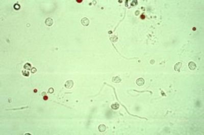
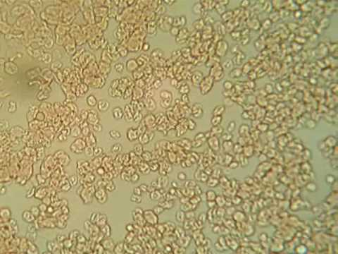
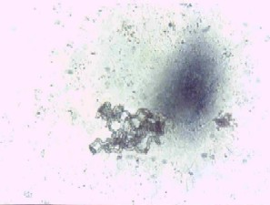
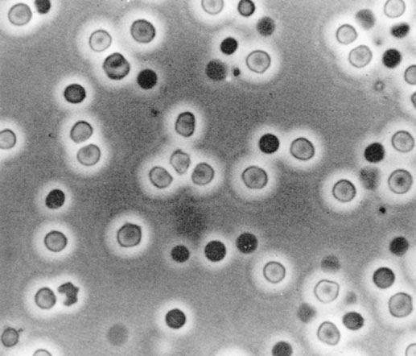

-

Urine
Urine is a slightly acidic fluid which carries
waste from the kidneys to the outside world.
-

Urobilin
Any of several brown bile pigments formed from
urobilinogens and found in normal feces, in normal
urine in small amounts, and in pathological urines
in larger amounts.
-

Rifampicin
A semisynthetic antibiotic C43H58N4O12 that
is used especially in the treatment of tuberculosis
and to treat asymptomatic carriers of meningococci. -

Mycobacteria
A genus of nonmotile acid-fast aerobic bacteria
of the family Mycobacteriaceae that are usually slender
and difficult to stain and that include the causative
agents of tuberculosis and leprosy as well as numerous
purely saprophytic forms.
-

Phenazopyridine
A chemical which, when excreted into the urine,
has a local analgesic effect. It is often used to
alleviate the pain, irritation, discomfort, or urgency
caused by urinary tract infections, surgery,
or injury to the urinary tract.
-

Turbidity
The cloudiness or haziness of a fluid caused by
individual particles (suspended solids) that are
generally invisible to the naked eye, similar tosmoke in air.
-

Uric Acid
Gout is caused by an accumulation of sodium
urate crystals in the joints. The crystals form
when the amount of uric acid in the body reaches
an abnormally high level.
Back